LLMs公开课 - 5.高效训练&模型压缩
1.背景介绍
1.1 CPU & GPU
预训练语言模型以每年十倍的速度增大，越大的模型往往表现出更好的性能；但为了训练这些模型耗费也越来越昂贵，训练代码变得更复杂。
希望让训练过程变得更加简单，训练变得更高效，并且训练更加廉价。
首先要分析GPU内存；其次理解在多张显卡之间的合作模式是怎样的。
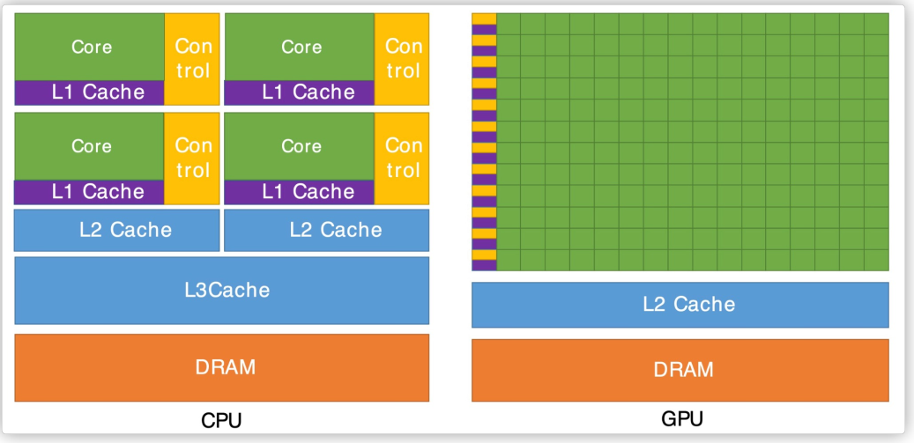
深度学习中最常见的矩阵乘法和向量加法适合于用GPU来计算。
CPU和GPU的合作方法通过CPU发送一些控制信号去控制GPU进行计算。
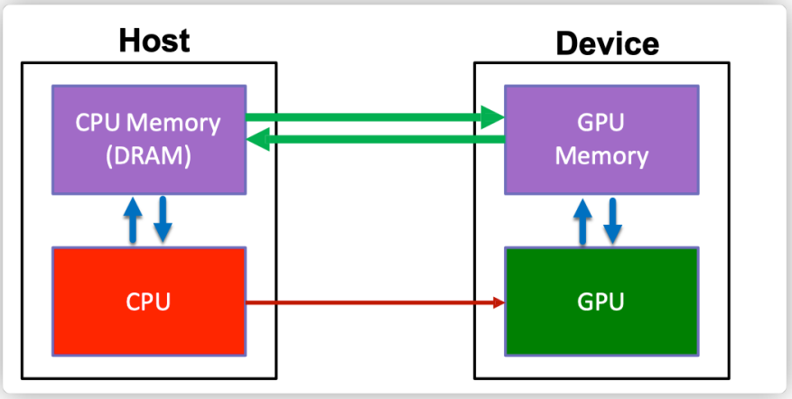
如果想把模型的向量加法或矩阵乘法放到GPU中计算的话，需要把这些数据从CPU上拷贝到GPU上(.cuda)。
显卡中有哪些显存的组成。
1.2 显存组成
（1）参数
为了加速模型的前向传播，需要把模型所有的参数都放到显卡中。
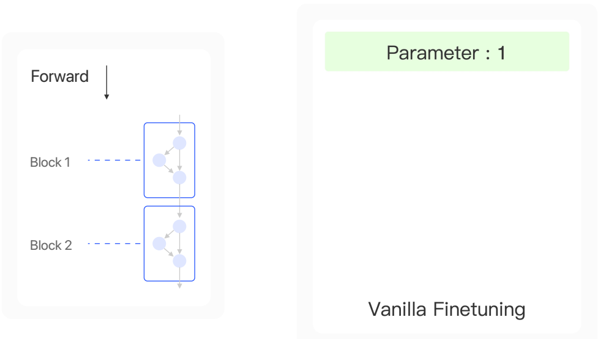
（2）梯度
在反向传播过程中，计算得到的梯度也保存到显卡中。
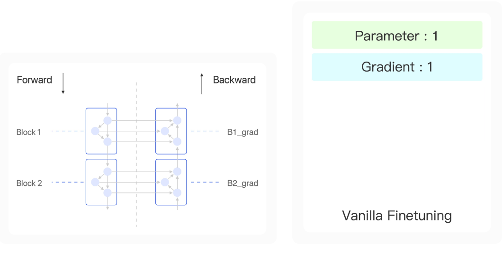
（3）中间结果
模型的中间计算结果，比如线性层 $y=Wx$，为了计算反向传播，需要在前向传播时在显卡中保存模型的输入(中间结果)。
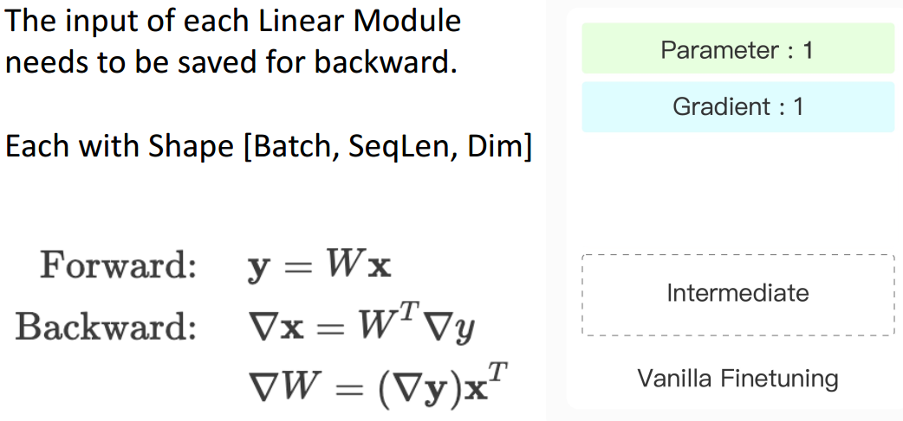
（4）优化器
第四部分，在显存中占大头的一部分，就是优化器，比如Adam，需要保存模型的梯度，和相关的历史信息(m_t,v_t)。它们的参数量是和梯度等数量级的。
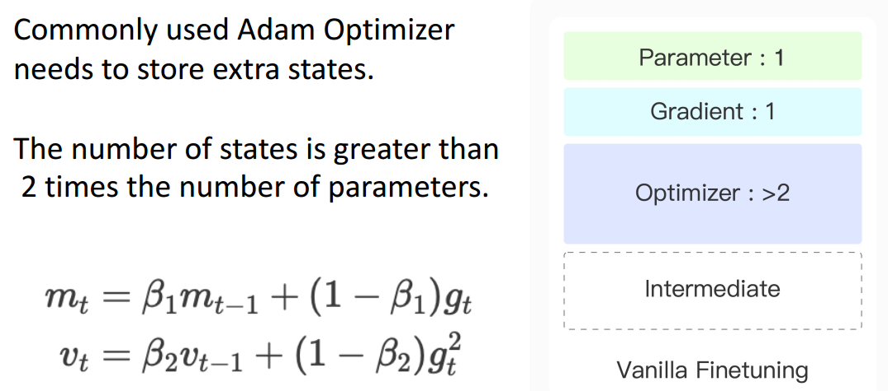
这四部分是预训练模型在显卡中主要的四个组成部分。
（5）示例
一个11B参数的预训练语言模型，每个需要用float类型(FP32)来存储
光模型参数就占用了40GB的显存。
2.模型训练优化方式
2.1 数据并行
(1）协作通信
0）参数服务器
- 有一个参数服务器。
- 前向传播
- 在每台设备上复制该参数
- 每个副本处理输入的一部分。
- 反向传播
- 每个副本的梯度取平均值。
- 平均梯度用于更新参数服务器
在数据并行过程中，有一个参数服务器，它保持了模型的参数，以及完整的数据。前向传播过程中，参数服务器上的参数会被复制到所有的显卡上，这样每张显卡上都得到了和参数服务器一样的参数。然后把数据分成三份，每张显卡用这部分数据进行前向传播&反向传播，得到各自的梯度，为了让模型学到这份数据的所有知识，需要把这些梯度信息进行聚合。这里用了一个取平均操作，然后让聚合好的参数去更新模型。就能学到这三部分数据合起来完整的知识。
参数服务器可以在0号显卡上，从0号显卡把模型的参数复制到1,2,3号显卡。这就像一个广播过程；而从1,2,3号显卡上对模型的梯度进行聚合(或规约)，把规约的结果放到服务器0号显卡上。
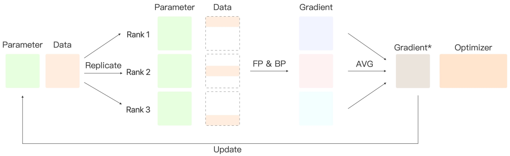
1）Broadcast
广播算子做的事情就是把数据从其中的一张显卡上传到其他所有的显卡上。可以看到通过广播之后，在原本第二张显卡上的in这个向量广播到所有显卡上变成了out向量。
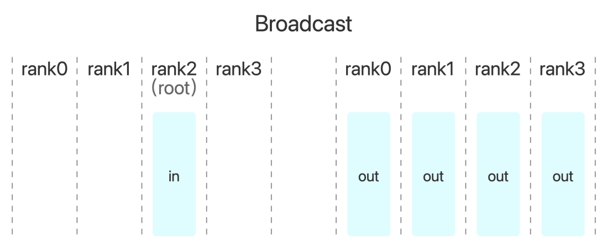
2）Reduce
规约(Reduce)。规约有很多种种类，可以是求和、平均、最值等。会把各张显卡上的数据进行一个规约，然后把规约得到的结果放到一张指定的显卡里面。比如这里把规约的结果放到2号显卡里面。假设规约操作是求和，那么2号显卡最终得到的out=int0+in1+in2+in3。
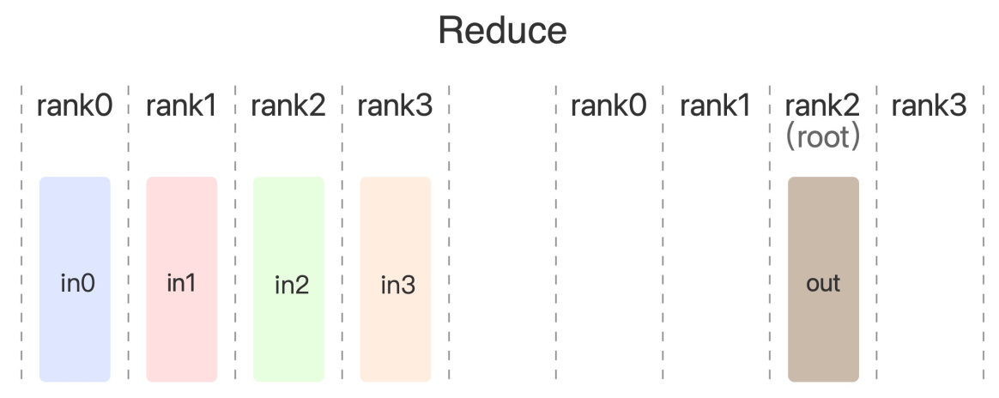
3）All Reduce
All Reduce。比规约多了一个All。在规约的基础上，把规约得到的结果告诉所有的显卡(All)。也就是说，最后得到的结果里面，每张显卡上都会得到完全一样的out=in0+in1+in2+in3。
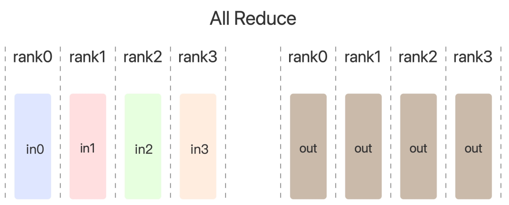
4）Reduce Scatter
Reduce Scatter。和All Reduce的相同之处在于，都会把规约得到的结果发送给所有的显卡。不同之处在于，Reduce Scatter最后每张显卡上只得到了一部分的规约结果。比如0号显卡就会得到in0的前1/4的参数＋in1的前1/4参数＋in2的前1/4参数＋in3的前1/4参数。而3号显卡会得到in0的最后1/4的参数＋in1的最后1/4参数＋in2的最后1/4参数＋in3的最后1/4参数。
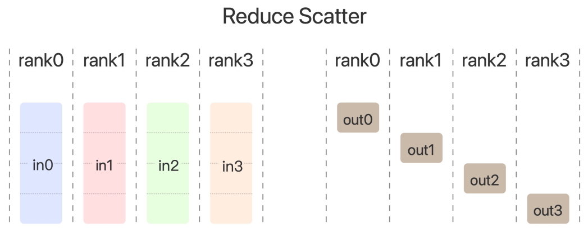
5）All Gather
收集(All Gather)，拼接每张显卡上的结果。比如in0拼接in1拼接in2拼接in3得到0号显卡的out，然后广播到所有显卡上。
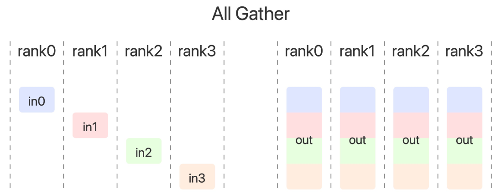
（2）数据并行
可以看到数据并行有两个核心点。
- 通过把数据分成很多份，让每张显卡计算得到各自梯度之后，为了得到所有数据的知识，需要把这些梯度进行一个规约操作。
- 通过使用参数服务器，让规约后的梯度去更新参数服务器上的参数。然后通过广播的操作，让每张显卡上同步得到更新之后的参数。
（3）分布式数据并行
而分布式参数并行对此进行了优化，舍弃了专门的参数服务器，让每张显卡各自去完成参数的更新，保证它们参数更新之后的结果一致。
具体来说，初始时，每张显卡上都有一个相同的模型参数，得到了一部分数据。通过前向传播&反向传播得到各自的梯度信息，然后对梯度信息进行一个规约。为了让每张显卡都得到相同的梯度信息，使用All Reduce，它会把规约结果告诉所有的显卡。这样，每一张显卡上都能得到完整的规约之后的梯度，每张显卡都有一样的参数，就可以分别通过模型的优化器进行更新。每轮更新之后，既然参数一样，梯度一样，优化器之前的历史信息一样，那么更新之后，各张显卡上的参数也会保持一致。
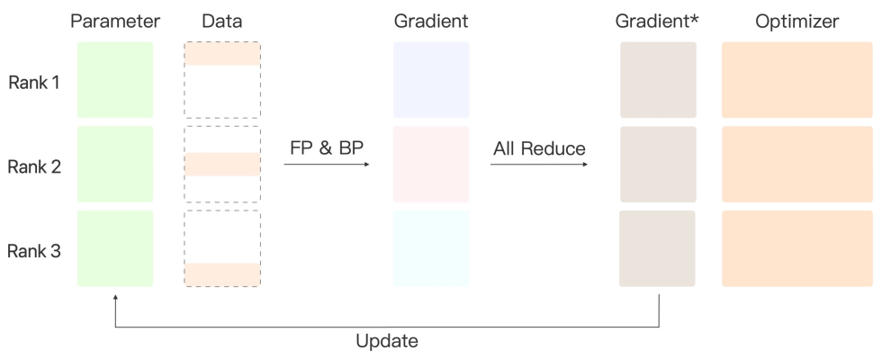
带来的显存上的优化
中间结果是一个和batch乘以句子长度和模型维度相关的显存占用。在使用数据并存的时候，把一批数据分成了很多份，让每张显卡只处理其中的一部分数据。每张显卡上所处理的batch大小就降低到了原来的显卡数量(n)分之一。通过把输入的维度进行了降低，那么模型整体的中间结果量也会进行降低。
缺点：数据较少时，参数，梯度，优化器都会保存到显卡上。
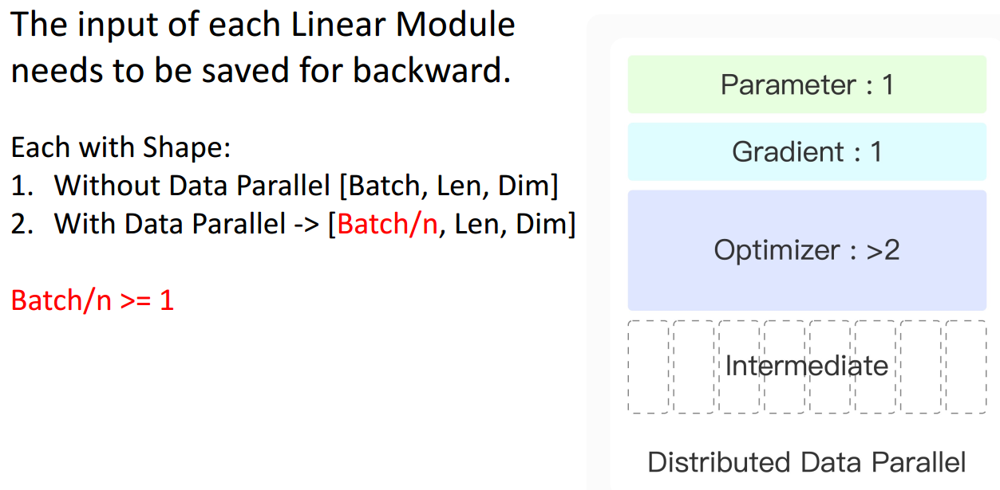
2.2模型并行
一张显卡上无法存放模型的所有参数，那么就想办法把一个模型分成很多个小的部分。
比如针对线性层矩阵乘法的例子，假设有一个3×2的矩阵。它乘上一个 2×1的向量，那么本质上可以把它的结果分成三部分。
这里的 3×2的矩阵就是线性层中的参数 W，向量就是线性层的输入。可以通过矩阵乘法的性质，把模型的参数横向切成很多份(n)，最后得到线性层的结果就是很多个这样小的矩阵乘上线性层的输入，最后把结果进行拼接。
通过这样的方式，线性层的参数就可以划分到多张显卡上。同时需要保证多张显卡上模型的输入是一样的。那么就不能使用数据并行的方式对数据进行划分。
需要保证每张显卡上的输入是一样的，是同样一批数据，这里对线性层参数进行划分。每张显卡上得到线性层参数矩阵的一小部分，通过这一小部分参数和数据进行矩阵乘法，就得到了很多个子结果。这里通过All Gather收集算子进行拼接，然后广播给所有的显卡。
这样，每张显卡上只需要保存原来的N分之一的模型参数，N是显卡数量。由于只保留了这么一小部分参数，梯度也只需要保留这么多，同时优化器也只需要保持同样级别的参数量。但模型计算的中间结果没有减少，这也是该方法的一个弊端。当batch size很大的时候，仍然会出现显存溢出的问题。
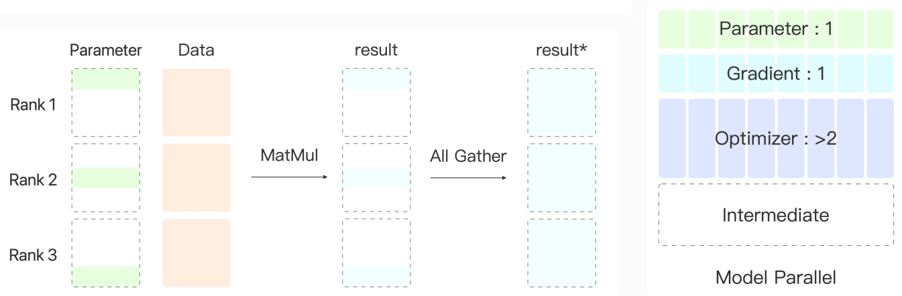
2.3 ZeRO
Zero Redundancy优化器是基于数据并行建立的一套框架，在数据并行中需要对模型的梯度进行规约。为了保证每轮迭代之后每张显卡上的参数仍然是一致的。就让每张显卡都得到了规约后的参数。然后每张显卡各自进行更新。
可以发现每张显卡用的是同样的一批数据，和同样的一批梯度去进行参数更新。那么它们各自去进行参数优化，是不是就带来了计算上的重复和冗余。
为了消除这样的冗余，那么每张显卡只获得一部分的梯度，然后只更新一部分参数。这样多张显卡通过合作的方式来更新模型的完整参数。
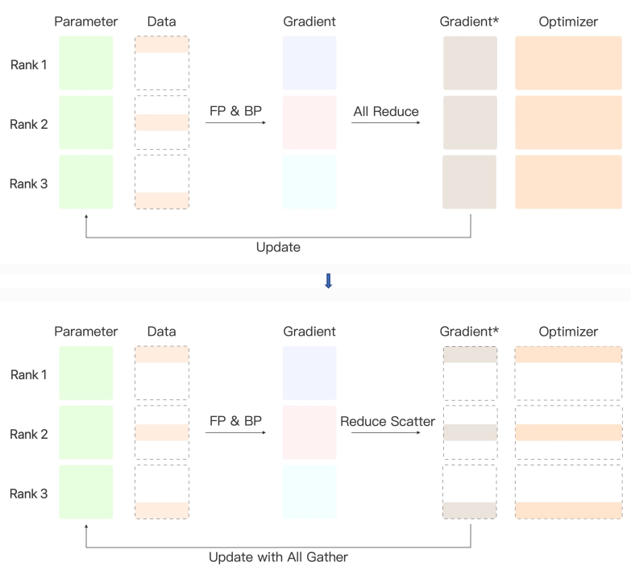
（1）ZeRO-Stage 1
具体来说，由于是基于数据并行的架构，因此每张显卡上保存了完整的模型参数。有一部分数据，通过前向传播&反向传播得到各自的梯度。之后在规约的时候，不是使用All Reduce的方式，而是使用Reduce Scatter让每张显卡得到一部分reduce的结果。这样让每张显卡上得到的部分梯度去更新对应的部分模型参数，最后通过收集的操作All Gather将每张显卡分工合作之后的结果告诉所有的显卡。这样，每张显卡上得到了完全一样的参数和一致的结果。
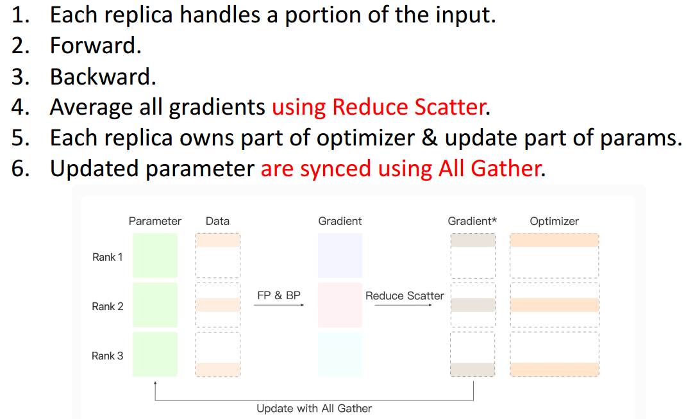
（2）ZeRO-Stage 2
在第2阶段中，进行了一个优化。在第1阶段中，需要在反向传播得到所有梯度之后，对梯度进行Reduce Scatter，然后让每张显卡上各得到一部分规约后的梯度Gradient*。 原来的梯度就不需要保存在显卡上了。在第1阶段，在反向传播结束之后，才把这个梯度移除。那可以在反向传播的过程中先把Gradient*算出来，然后把之前一步的Gradient删掉。
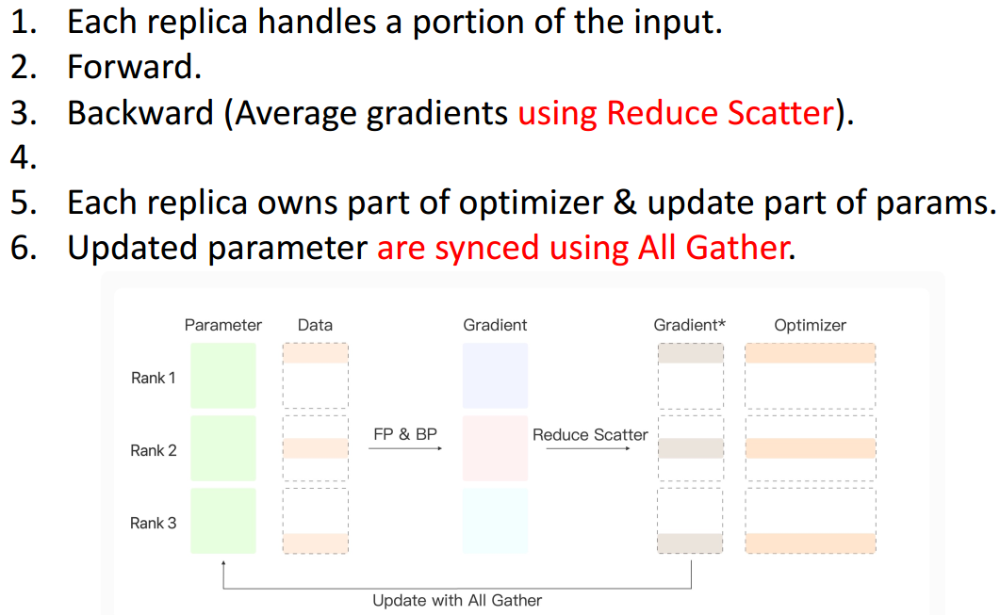
（3）ZeRO-Stage 3
在第3阶段，对模型的参数进一步划分。因为每张显卡上只保留了一部分梯度去进行参数更新，参数更新也只更新一部分的模型参数。这样，实际上每张显卡可以只保存它自己参数更新所负责的那一部分参数。在FP\&BP的过程中，需要的时候，把模型的参数进行一个All Gather的操作， 用完之后，就可以将参数从显卡中释放。
注意：反向传播也需要模型完整的参数
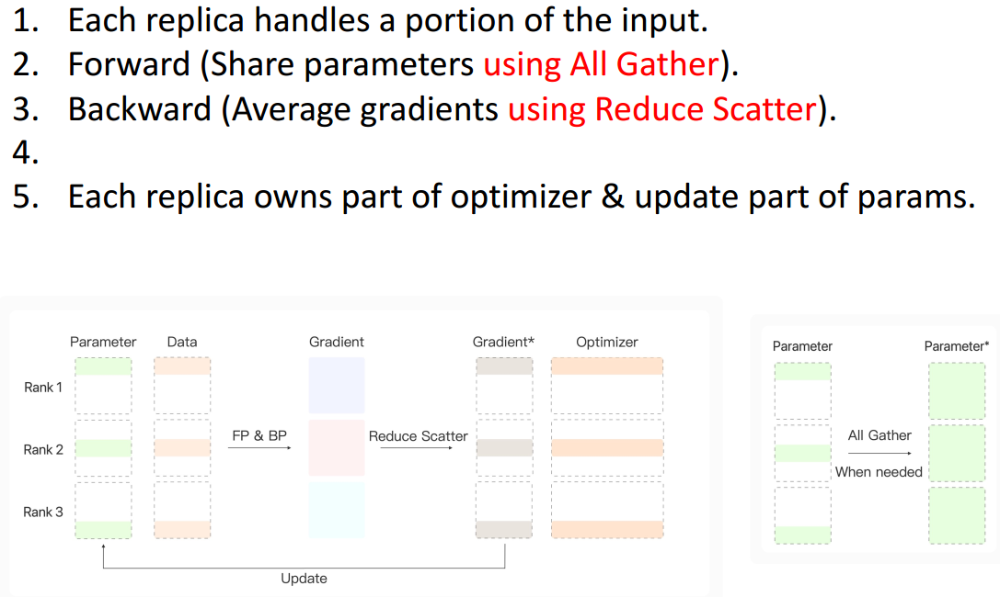
（4）总结
比较一下这三个阶段的显存占比：
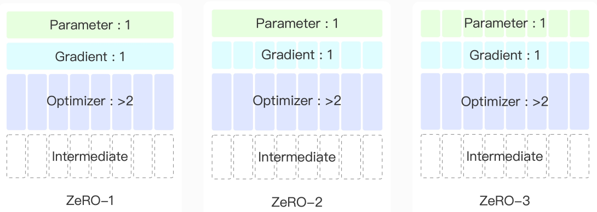
在第1阶段中，每张显卡只需要处理一部分的模型梯度，优化器降低到了原来的显卡数分之一，同时把中间结果的量也降低到原来的卡数分之一；
第2阶段中，进一步地把模型的梯度划分提前，把Reduce Scatter提前到了反向传播的过程中，实际上不需要保留完整的梯度。
第3阶段中，进一步地划分参数。
通过这三部分的优化，显卡上的四大组成部分：参数、梯度、优化器和中间结果都得到了划分，每张显卡只需要保持自己的那部分参数。
2.4 Pipeline并行
与模型的并行方法有类似之处，模型并行的方法通过把线性层分成很多个小的矩阵，然后把这些小的矩阵分到各张显卡上。
而对流水线的并行方法，把模型的不同层分给不同的显卡。比如有一个三层的Transformer，可以把Transformer的第一层分到第一张显卡上；第二层分到第二张显卡上，等等。
进行前向传播的过程中，需要在第一张显卡上完成第一层的模型计算，然后把计算结果告诉第二张显卡，第二章显卡进行计算，再把计算结果传给下一张显卡。
可以看到，这样的方法，显存占比都得到了划分，因为每张显卡上只保留了某些层的参数，也只用保留对应的梯度。虽然没有使用数据并行的方法，但模型层数变少了，这样中间结果也得到了减少。
但这种方法存在的弊端在于，0号显卡计算的时候，1号和2号显卡实际上处于空闲的状态。
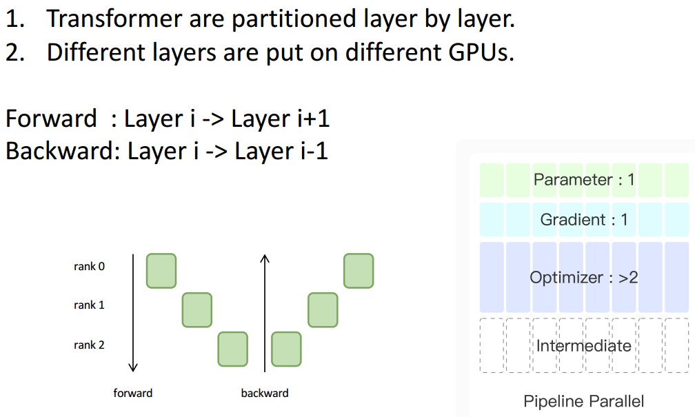
2.5 优化技术细节
（1）混合精度
比如C语言中有float类型、double类型和long double类型。数值表示范围依次增大。
double类型比float类型有更大的表示范围和更高的有效位精度，但是double类型的计算会更慢。
同理FP16和FP32是一样的，前者的数值表示范围和有效位数更小，同时计算会更快。
在**一般模型的训练中，可能使用FP32**作为默认训练参数的表示。实际上，模型的参数一般不会超过千这个数量级，那么完全可以使用FP16。
那能否从FP32转到FP16得到运行速度上的提升呢？其实会面临一个问题，在参数更新的时候，权重=梯度*学习率，一般学习率是比较小的：1e-5、1e-3等。而FP16能表示的最小值，是1e-5数量级的数，假如梯度乘上学习率低于FP16的表示范围，那么参数更新量就会产生丢失(下溢)。
那么既然FP32能达到出更高的表示范围，可以把**FP16的梯度乘上学习率得到的参数更新量表示为FP32**，但模型的参数是更低精度的FP16。那无法直接把参数更新量加到模型参数上，此时需要在优化器上额外保留单精度(**FP32**)的一个参数。
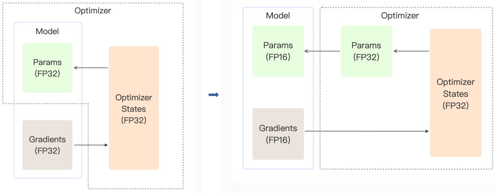
在一般的模型训练中，模型会有FP32的参数和FP32的梯度，然后优化器会使用FP32的梯度进行参数优化。
而在混合精度训练中，为了加速模型的前向传播&反向传播，模型中会使用半精度(FP16)的参数，和半精度的梯度，把梯度传到优化器里进行优化器的更新。同时把优化器的更新量保存为**FP32类型，把这个FP32类型通过优化器里临时创建的FP32**参数进行累积，之后转回到FP16的参数来与模型进行计算。
（2）Offloading
以Adam为例，优化器的参数量会是模型参数量两倍的关系，显然它是一个显存占用的大头。能否把它从显卡中移除呢？
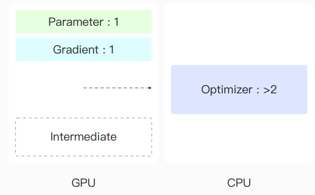
其实是可以的，可以把它从显卡上移到CPU上。
这样需要先把模型参数的梯度从显卡中传给CPU，在CPU上进行优化器的优化，将优化的结果传回显卡上。在使用了ZeRO3梯度优化之后，参数划分为显卡数分之一，通过把一张显卡绑定到多张CPU上，就可以让每张CPU上的计算量足够低，能让CPU不成为模型训练的瓶颈。
（3）Overlapping
通信的计算的重叠。在GPU中的内存操作一般是异步的，可以提前给内存发送一个请求，可以去进行其他的计算，其他计算完成之后，对那个内存请求进行接收。
在模型前向传播过程中，需要把Layer1的参数通过Gather操作，然后对Layer2的参数进行优化。在获得完Layer1参数之后，在Layer1前向传播计算过程中，异步地把Layer2参数的获得进行提前。在Layer1前向传播计算完之后，Layer2的参数也已经获得，那么就可以马上进行Layer2前向传播计算。
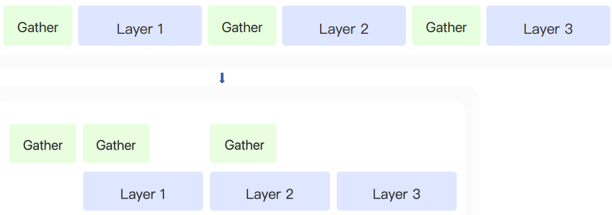
（4）Checkpointing
Checkpointing就是检查点，就像单机游戏中的存档。
为了支持模型的反向传播，需要把模型计算的所有中间结果保持在显卡中，是否可以通过存档的方式进行优化。
即不把所有结果都保持到显卡中，而只保持一定的存档点。
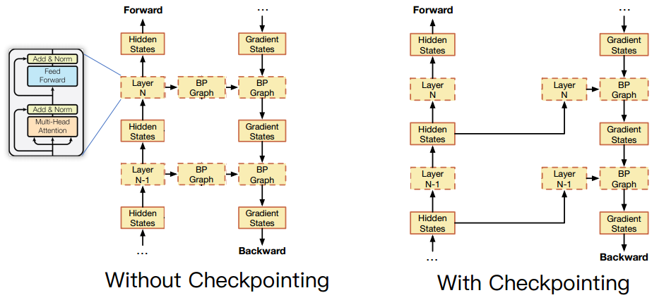
以Transformer为例，只保留Transformer大层的输入作为检查点，在反向传播过程中，那么如何为大层中的线性层梯度进行计算。此时可以通过重计算，就是说通过Transformer每个大层的输入，在反向传播过程中，重新对它进行一个前向的传播。临时得到每个大层里面所有线性层的输入，那么得到了中间结果，就可以进行反向传播。
完成了这一层的反向传播之后，就可以把检查点和临时重计算的中间结果从显存中清理掉。这样就不需要保存那么多中间结果。
2.6 BMTrain——使用介绍
本小节介绍BMTrain性能上的提升。
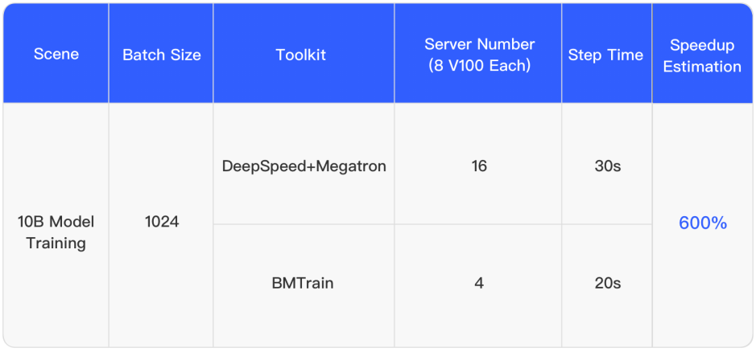
据说可以使用更少的机器，达到更快的速度。
bmtrain_demo.ipynb - Colaboratory (google.com)
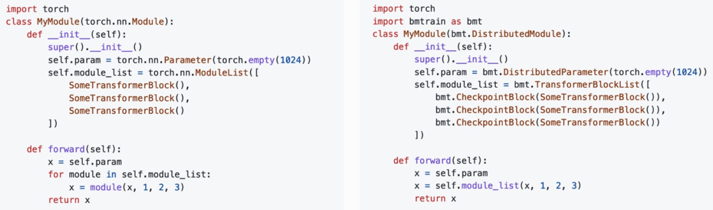
使用上也简单，替换一些包名前缀。就可以用到前面提到的一些技术。
3.模型压缩
背景就是大模型的规模增长非常快。
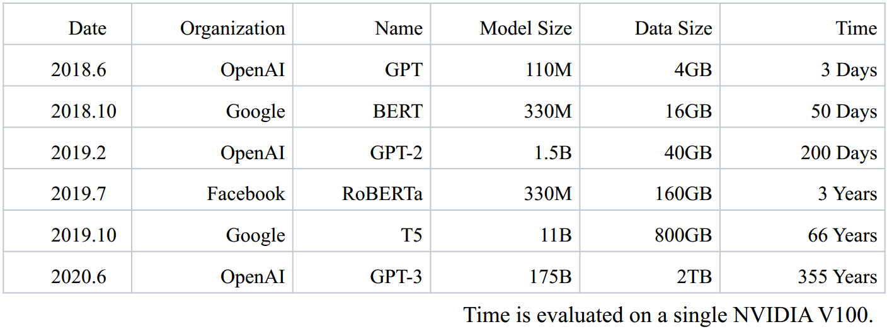
接下来介绍模型压缩的一些技术，目的是希望把大规模的模型压缩成更小规模。
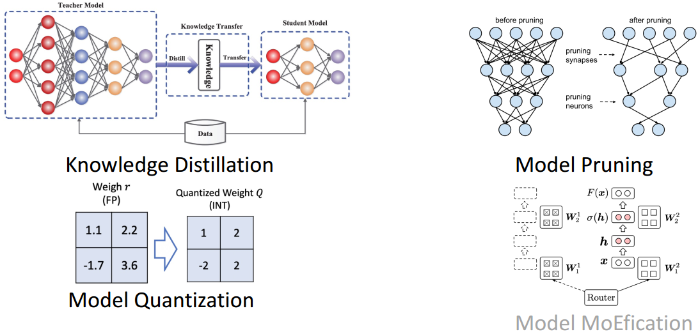
3.1 知识蒸馏（Knowledge Distillation）
什么是知识 ？
这里知识指的是模型的参数本身，本质是把模型从输入映射到输出的过程。知识蒸馏就是想把这种映射能力从大模型迁移到小模型上。
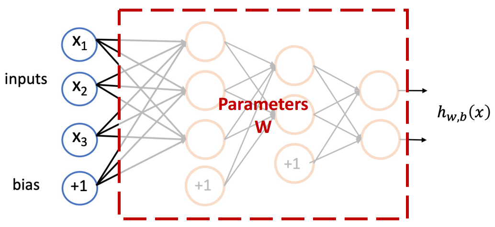
soft target比gold labels提供了更多的信息
对于输入数据，会有大模型作为Teacher，它会算出当前数据的预测结果，logits。
同时，该数据也可以输入给一个小得多的Student模型，该模型对于数据也能给出logits，知识蒸馏想做的事情是让这两个logits尽可能地接近。
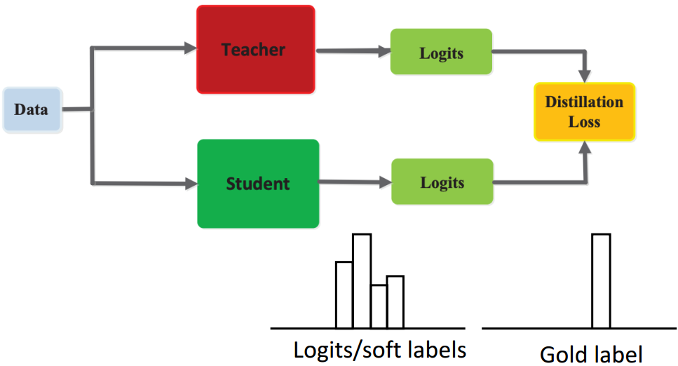
（1）PKD
第一篇关于预训练模型的知识蒸馏工作称为PKD，它是面向BERT做的知识蒸馏。
Sun et al. Patient Knowledge Distillation for BERT Model Compression. EMNLP 2019.
它针对传统的知识蒸馏进行改进，让student模型可以从teacher模型中间层进行学习。
PKD针对模型很多层都有输出，或者说隐藏状态。它想做的事情是让student模型的隐藏状态和教师的尽可能接近。而不是仅拟合最终的输出。
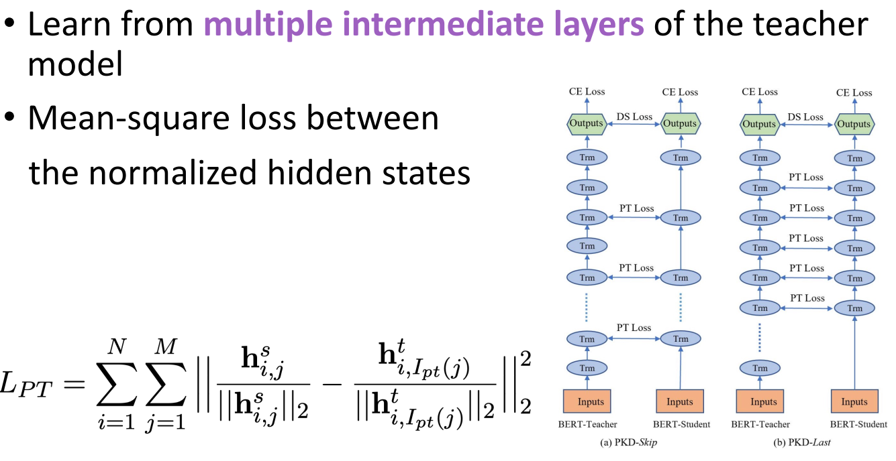
（2）TinyBERT
还有一个非常有代表性的工作是，TinyBERT。它进一步地推广了能学习的信号。从Teacher模型中找到了更多的可用于知识蒸馏的中间表示。 比如输入的嵌入向量以及Attention矩阵。
Jiao et al. TinyBERT: Distilling BERT for Natural Language Understanding. Findings of EMNLP 2020
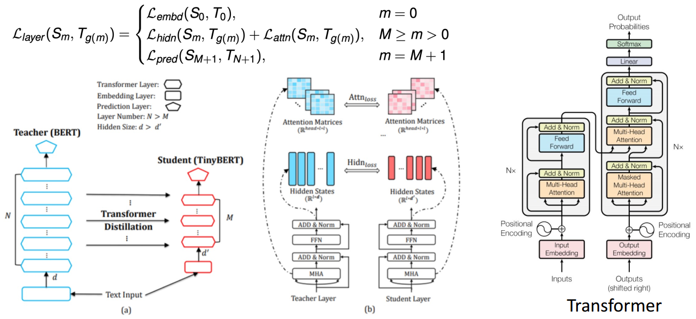
3.2 模型剪枝
这里剪枝做的事情，比如对于参数矩阵W，可能有很多元素非常接近于0。那么是否可以把这些参数丢掉。
核心是去除参数冗余部分，去除的依据是根据重要性，重要性最直观的依据是看元素绝对值大小，如果非常接近于0，那么就认为它不重要。
剪枝分为结构化剪枝和非结构化剪枝。
现在比较有用的是结构化剪枝，它考虑一次性删除矩阵中的一行/一列/一块。这样删掉之后矩阵还是一个比较规整的形状，从而比较利于并行化计算。
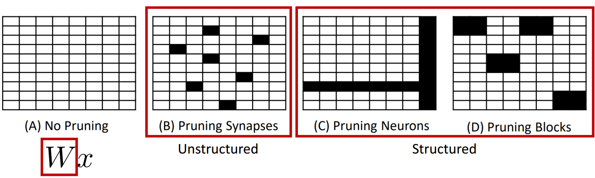
权重剪枝效果
- 30-40%的权值可以被丢弃而不影响BERT的普适性(剪枝预训练)
- 对下游任务进行微调不会改变其性质(剪枝下游)
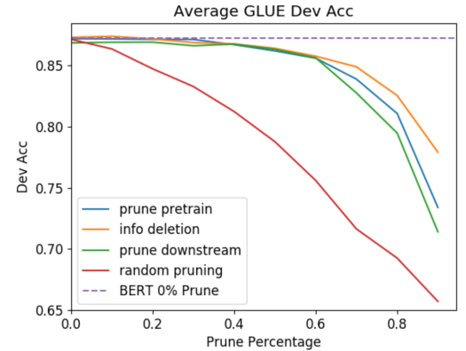
注意力剪枝（结构化）
- 切除一个头
- 定义注意头的重要性分数
针对注意力中的冗余。如果把某个注意力head丢掉，观察对与机器翻译和语言理解任务上的影响，从图中可以看到，这种做法不一定会对模型造成负面的影响，甚至很多时候还带来结果的提升。
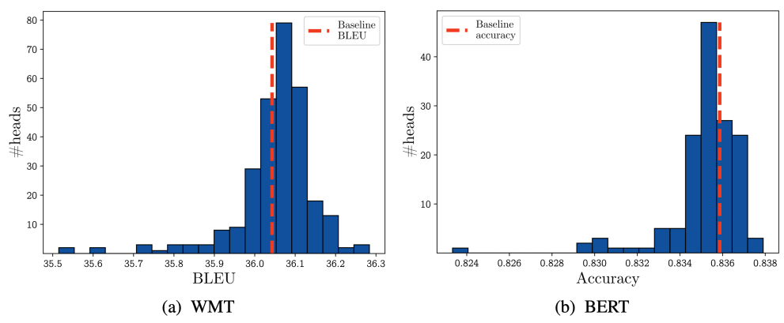
在不同的模型上迭代地剪枝头(蓝线)
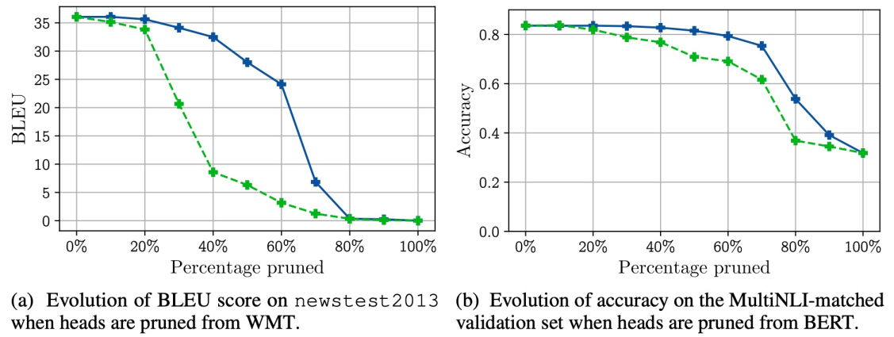
- 层剪枝(结构化)
- 将dropout从权重扩展到层
- 训练：随机dropout层
- 测试：选择任意深度的sub-network
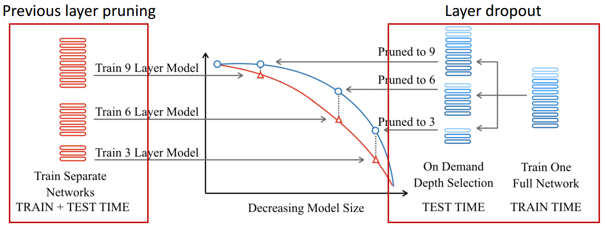
3.3 模型量化
标准的神经网络数值计算是浮点计算，那么表示的位数相对多一些。观察发现，神经网络其实不需要这么高的精度，所以可以把浮点的表示转换成定精度的表示。
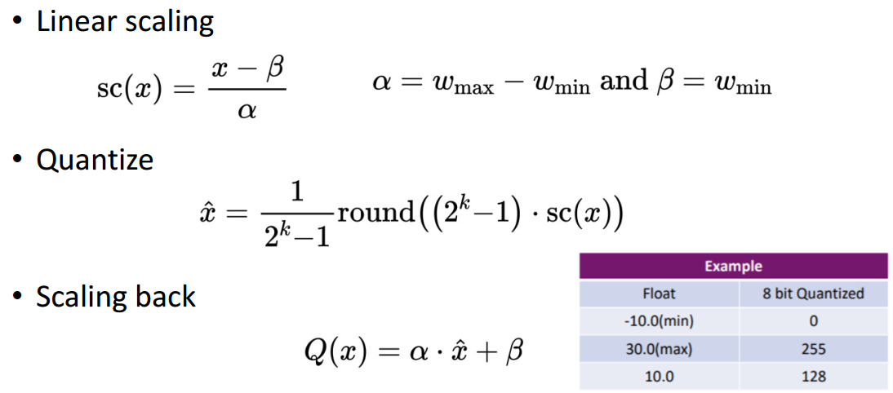
随着位数的降低，准确率的变化：
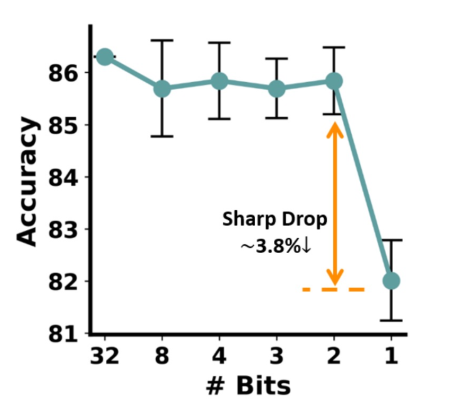
3.4 其他方法
（1）权重共享
ALBERT：两种参数缩减技术
- 将大的词表向量分解为两个小矩阵
- 跨层参数共享
Lan et al. ALBERT: A Lite BERT for Self-supervised Learning of Language Representations. ICLR 2020.
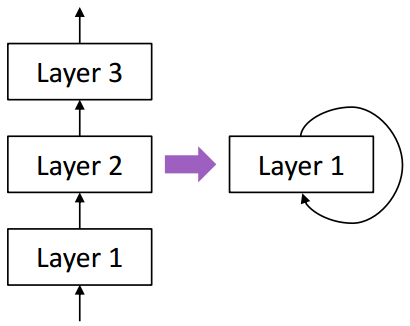
（2）低阶近似（Low-rank Approximation）
难以直接进行低秩近似
分解输入矩阵
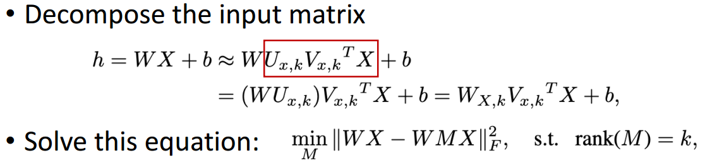
（3）Architecture Search
Transformer架构是否是完美的？
- 基于Transformer的神经结构搜索
- 预定义几个简单模块
- 对每个架构进行几个小时的训练
So et al. Primer: Searching for Efficient Transformersfor Language Modeling. NeurIPS 2021.
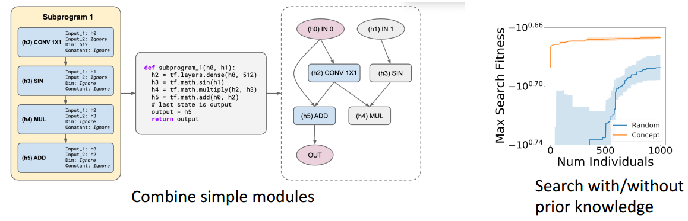
两种高效的架构
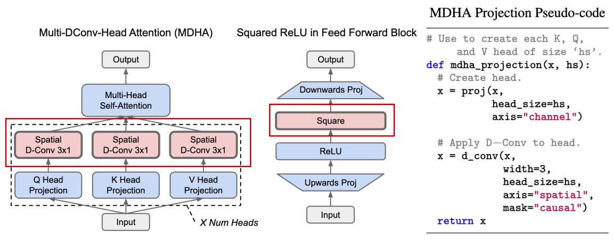
4.BMCook
与现有的压缩工具包相比，BMCook支持所有主流的PLM加速方法
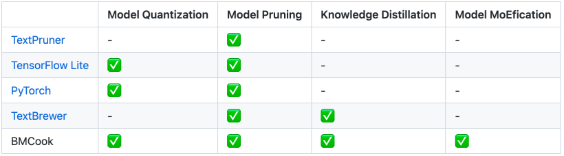
- 用几行代码实现不同的压缩方法
- 压缩方法可以以任何方式组合到极端加速
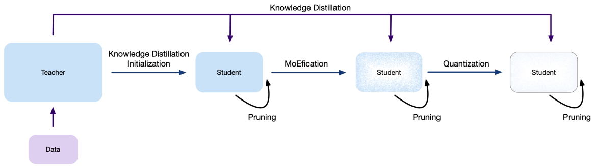
- BMCook的核心：模型压缩配置文件
- 用几行代码实现多种方法
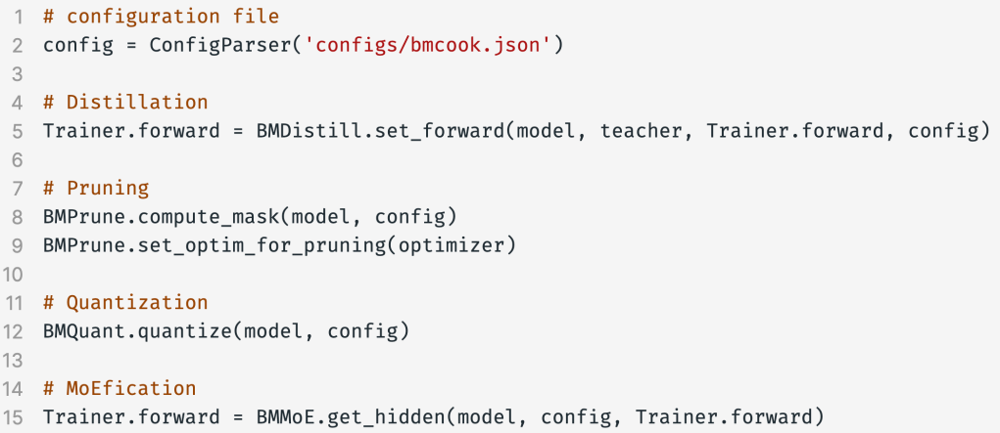
蒸馏配置，支持MSE和CE损耗
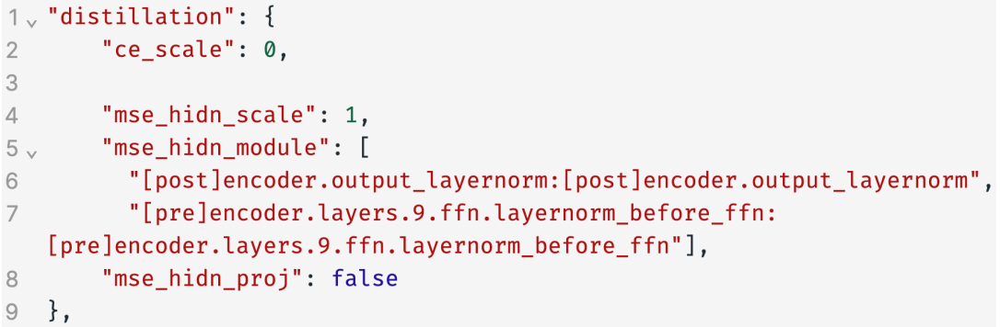
模型剪枝配置，支持非结构化剪枝
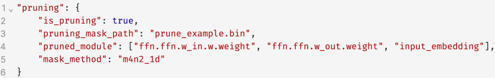
模型量化配置，更换所有线性模块
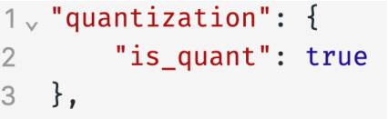
5.BMInf
BMInf是OpenBMB发布的第一个工具包。
Github repo: https://github.com/OpenBMB/BMInf
主要的目的是能在便宜的GPU，比如GTX 1060上，也能运行起来大模型。
消费级显卡运行大模型困难：
- 高内存占用；
- 计算能力；
5.1 深入理解Transformer
来深入分析模型，看如何优化模型。
Transformer模型中主要的就是线性层，比如对于CMP-2中90%的参数都是在线性层中。
所以先来针对线性层。在允许一些精度损失的前提下，来优化线性层的运算效率。
https://developer.nvidia.com/blog/nvidia-hopper-architecture-in-depth/
目前常用的是FP32，但目前模型比较大，为了降低开销，逐渐在训练过程中引入FP16。
FP16示例：1.001， -1.001FP8示例：1.0， 1.25， 1.5
INT8：范围更小，但更准确
为了进一步降低开销，有没有可能使用INT8来表示参数。
5.2 量化
使用整数来模拟浮点矩阵运算。
首先找到矩阵里面最大的那个数，然后缩放到-127~127，得到缩放系数。然后把浮点矩阵中所有元素除以该缩放系数，每个元素值经过四舍五入就能得到新的整数。这样可以把浮点数矩阵拆成缩放系数和一个整数矩阵。
就让能让矩阵中值从FP16变成了INT8。
在完成了矩阵量化之后，如果用INT8来模拟矩阵乘法呢？
针对线性层来说，分别对它的输入和权重进行量化，就可以得到两个INT8的矩阵和对应的缩放系数。接着在这两个INT8的矩阵中进行矩阵乘法。这会得到一个整数结果，但该结果INT8是存不下来的，此时会用INT32来存储。同时针对缩放系数进行一个标量惩罚，得到一个新的缩放系数，然后把整数结果乘上这个新缩放系数还原成浮点数。
但是该方法直接应用在Transformer上效果不理想。因为Transformer中矩阵太大，使用一个缩放因子有点困难。
此需要更加精细的量化方法。可以将量化的粒度从原来的整个矩阵变成一行或一列，计算单行/列的缩放系数。 这种方法能在Transformer上达到不错的效果。
使用这种方法可以使模型大小优化一半(11G)，但还是不能放到GTX 1060(6G)上。
5.3 内存分配
借鉴操作系统中虚拟内存机制。
在进行一个百亿模型推理的时候，实际上并不会同时用到这11G的参数，每次只用一部分。比如每次只计算一层，实际上只用到了这一层的参数。那些暂时不用计算的层没必要一直放到GPU上。
这种方法在CUDA6中被实现了。
如果能在计算一层的同时去加载另一层参数，那么理论上只需要两层，就可以让整个模型完美地运行起来。比如我们在计算第0层的时候，同时加载第1层。这样第0层计算完之后，就可以释放第0层所占的空间，去加载第1层的参数进行计算，同时加载第2层参数。
但实际操作上遇到了一些问题，
实际上传输一层参数的时间远远超过了计算该层参数所用的时间。如果只放两层参数的话，虽然占用空间小，但花费的时间反而特别长。那是否可以多放几层，来减少加载参数所用的开销。
假设一块GPU上能放n层参数，那么可以固定n-2层在GPU上，多余的2层空间用于调度。
那现在的问题是，哪些层固定？
假如两层需要从CPU加载，左边的方案是固定7,8,9，调度6和10。 右边是固定6,8,10，调度7个9。
这两种方法的区别在于，要加载的层之间的间隔，左边是间隔了3层，右边是间隔1层。
那么左边的方案肯定不会差于右边的，因为我们在加载完第6层之后，中间留下第7、8、9层计算的时间来加载第10层。即留给加载第10层的时间更长。
所以要尽量扩大需要加载的两层之间的间隔。
5.4 使用介绍
在实现了上面的技术(BMInf包)之后，终于可以把百亿参数模型放到GTX1060上运行起来。
那么这么好的工具包怎么使用呢？